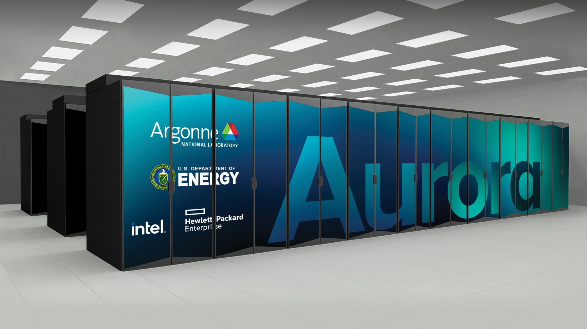
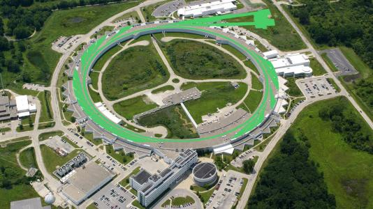

Welcome to the Ganesh Sivaraman Lab
We are a computational materials and molecular science group in the Department of Materials Design & Innovation at the University at Buffalo.
Our lab develops machine-learning-driven atomistic modeling approaches and applies them to materials design, experimental characterization, and biomedical systems.
Explore our dedicated Research page for project thrusts and scientific directions.


At a Glance
Research
ML interatomic potentials, AI-driven molecular discovery, and ML-enabled interpretation of experimental data.
View research areas →Publications & Patents
A curated list of lab outputs since January 2025, plus intellectual property activity.
Browse outputs →Open-Source Software
We maintain community tools for active learning, molecular ML, and long-range interactions.
Explore software →